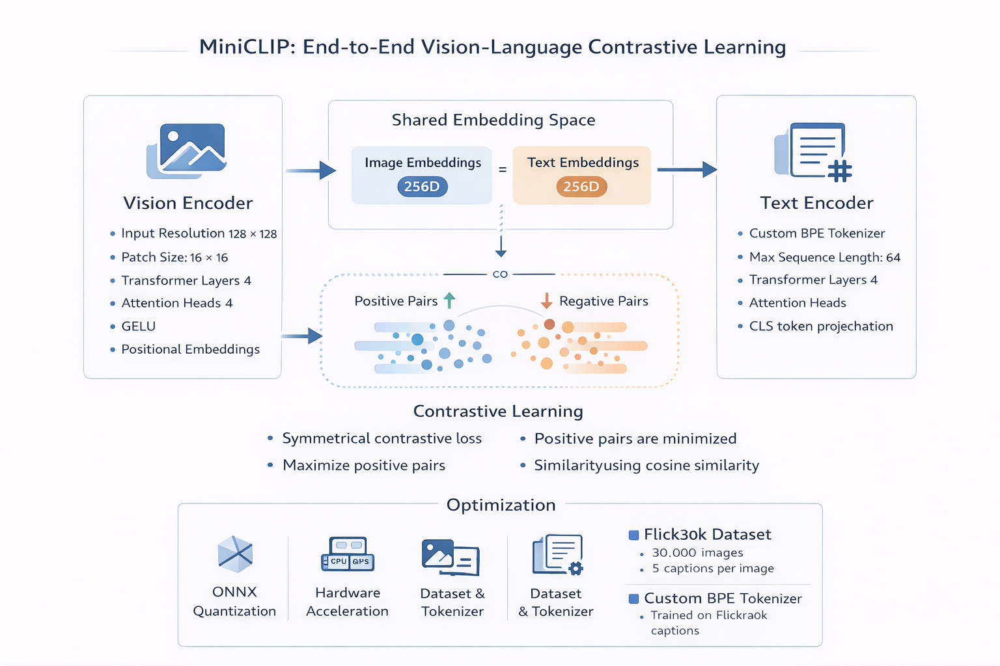
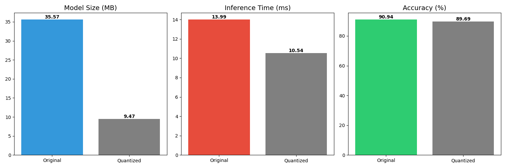
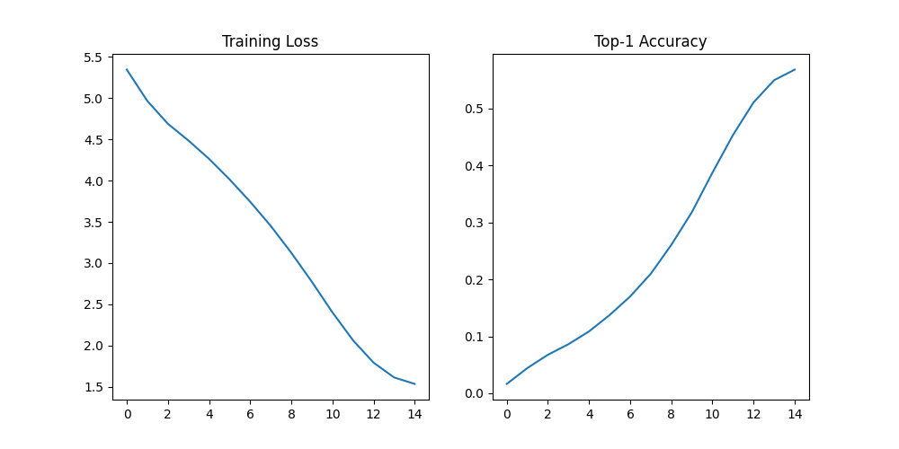
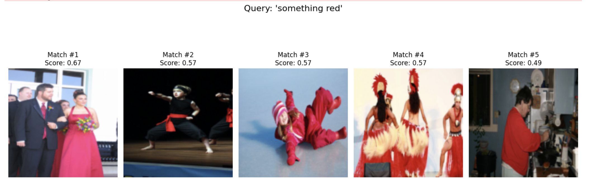
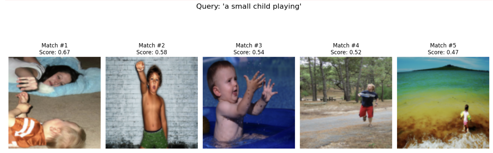
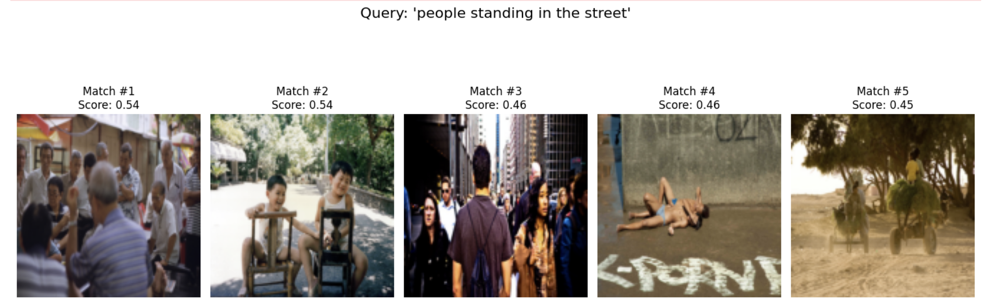
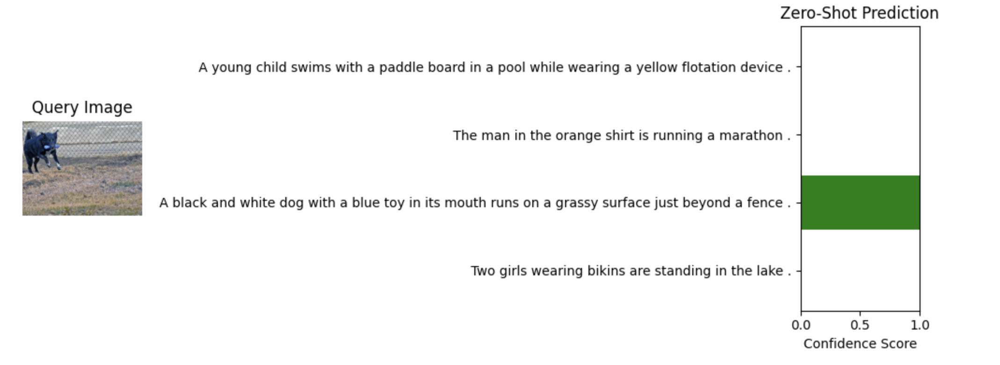
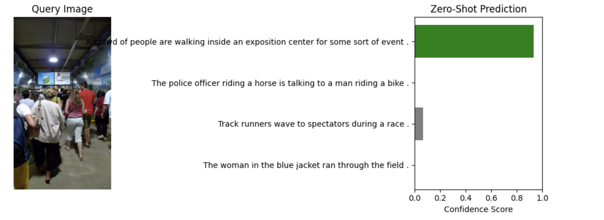
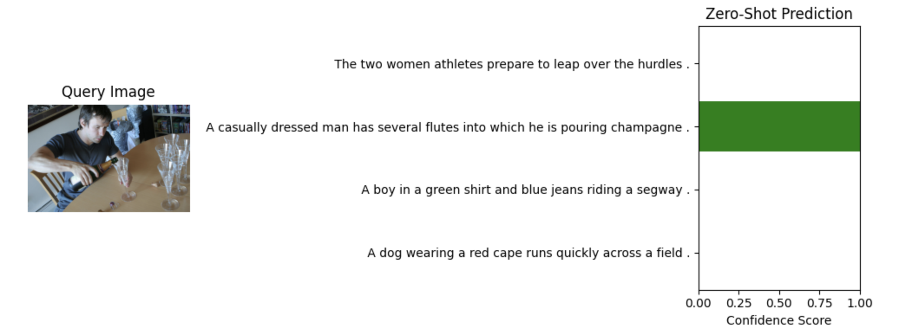

MiniCLIP is a from scratch implementation of the CLIP architecture, designed as a lightweight and deployable vision language model.
The system learns a shared embedding space for images and text, enabling zero shot classification and semantic retrieval using vector similarity.

The model follows a dual encoder transformer design consisting of a Vision Transformer and a Text Transformer.
The model was trained on the Flickr30k dataset, containing 30,000 images with multiple captions per image.
A custom Byte Pair Encoding tokenizer was trained on caption data using the HuggingFace Tokenizers library.

Post training optimization was performed using ONNX Runtime dynamic quantization to improve deployment efficiency.

The model was trained for 30 epochs and showed rapid convergence in early stages followed by stable validation.
The trained model supports zero shot classification and semantic image text matching.






PyTorch, Transformers, HuggingFace Tokenizers, ONNX Runtime, CUDA, MPS